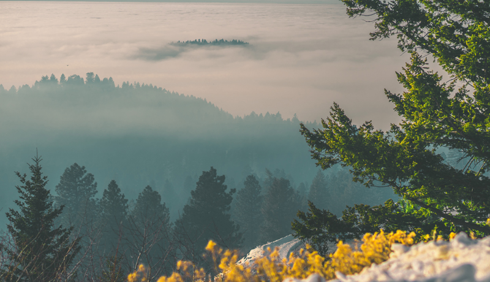
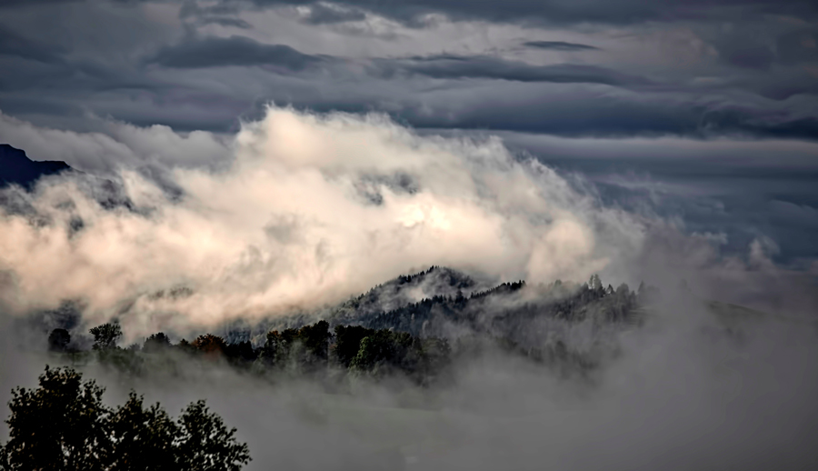
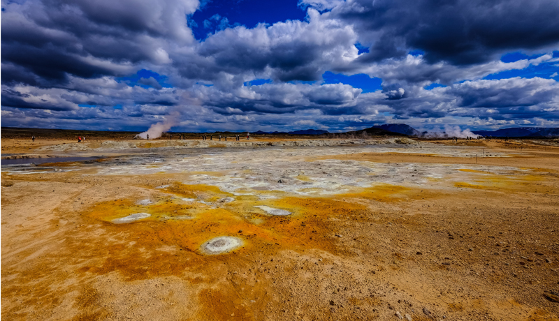
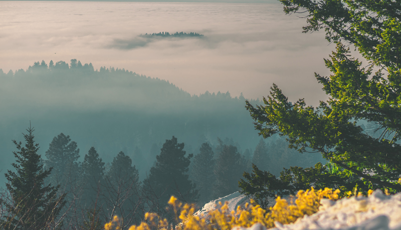
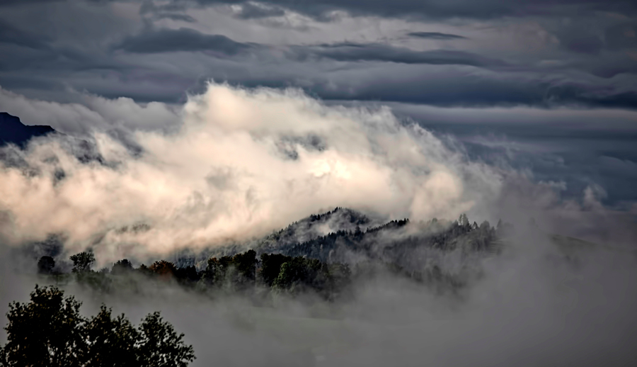
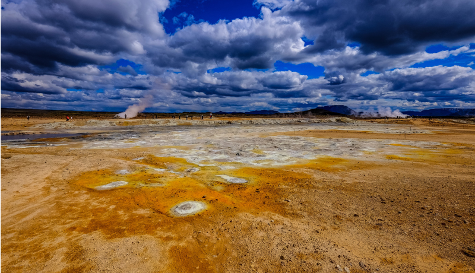
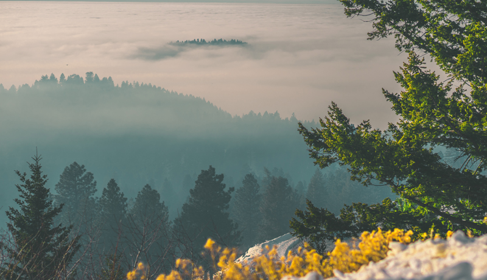
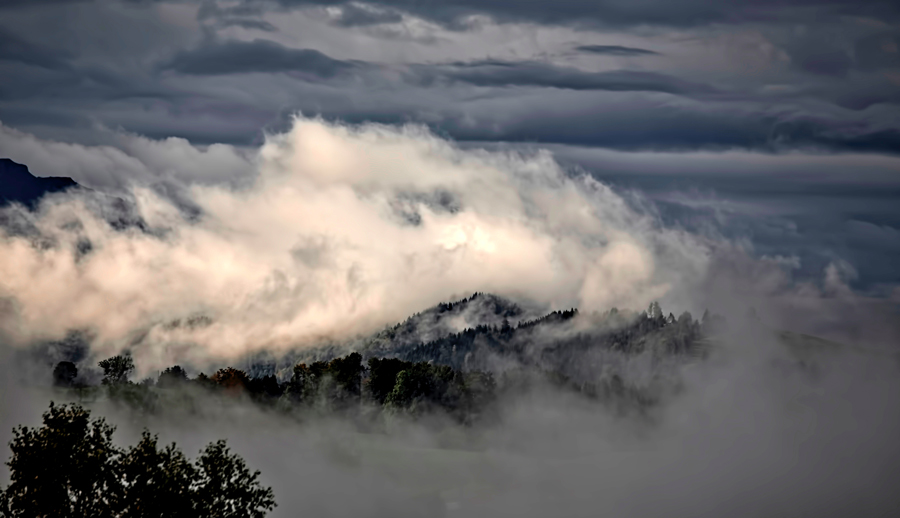
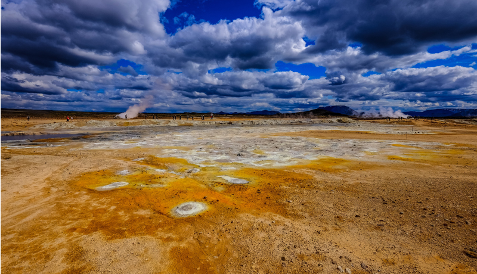

The Storm Sentry
Sun or Rain, Lets Play
☰ Menu
Home
Preston
Soda Springs
Fish Haven
Storm Center
Gallery
Gallery
Drive all day

Majestic mountain veiws
Sand dunes and lakes

Cloud covered mountains
Rivers full of fun

Open fields for miles

 Drive all day

Majestic mountain veiws

Cloud covered mountains

Open fields for miles
Drive all day

Majestic mountain veiws

Cloud covered mountains

Open fields for miles